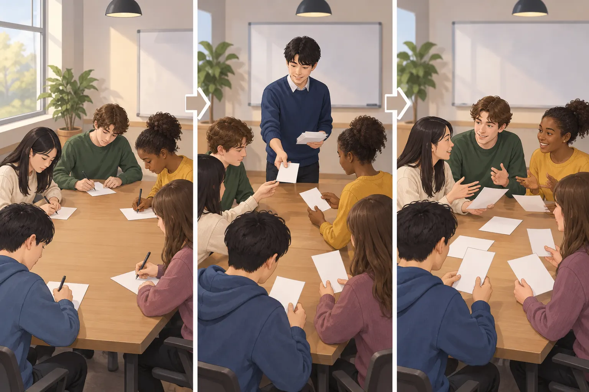
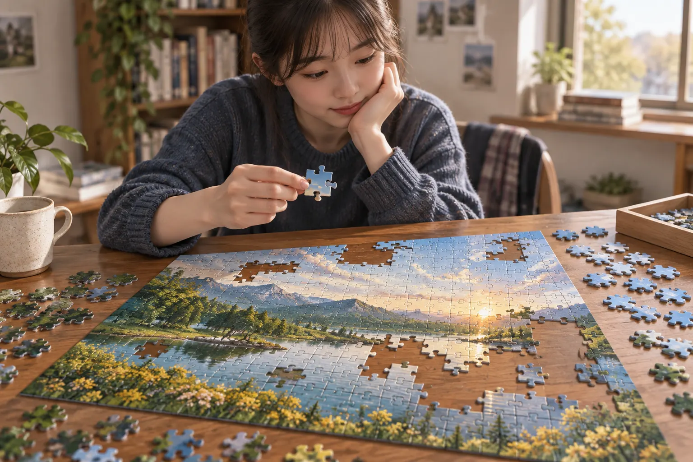
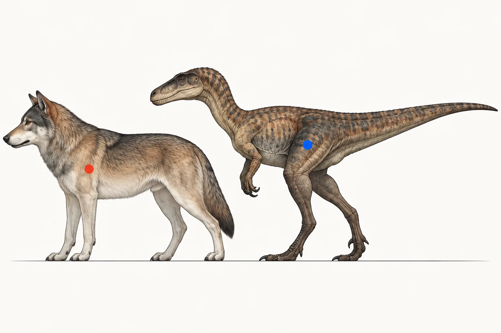

외우기 전에,
지문부터 이해하자.
학년과 자료를 고른 뒤 지문 번호를 선택하세요. 영어 원문과 근거 문장으로 글의 흐름을 익히고, 장면이 도움이 되는 지문에서는 그림도 함께 봅니다.
자료 선택범위 선택지문 번호이해 LAB
모의고사
학년과 시험 범위를 확인하고 자료를 고르세요.
고1
9월 모의고사
학교별 시험 범위를 합쳐 필요한 지문을 한곳에서 선택합니다.
20–24 · 26 · 29–42번 지문 번호 고르기 → 22개 화면 연결고2
9월 모의고사
18번부터 45번까지 시험 범위 지문을 같은 학습 흐름으로 연결했습니다.
18–45번 · 학교별 범위 확인 지문 번호 고르기 → 6지문 연결진주여고2
2025년 10월 모의고사
시험 범위 여섯 지문을 관계형 도식과 원문 근거로 연결했습니다.
22·23·33·34·37·38번 지문 번호 고르기 →학교별 부교재
학교와 학년을 고른 뒤 시험 범위 지문을 찾아보세요.

대아고1
부교재
Booster 4과·5과·고난도 TEST 1회를 단원별로 고릅니다.
4과 독해 · 5과 독해 · TEST 1회 · 문법 준비 중 단원과 지문 고르기 → 7개 단원 · 62지문 연결대아고2
부교재
N제 2~5강과 미닛15 13~15회를 단원별로 고릅니다.
원문·해석·흐름 62지문 · 전 지문 클릭형 확인 문제 연결 단원과 지문 고르기 → 4개 단원 · 16지문 연결경해여고2
부교재
수특라이트 영어 12~15과를 단원별로 고릅니다.
원문·해석·시각 자료·흐름 · 클릭형 확인 문제 단원과 지문 고르기 → 4개 단원 · 12지문 연결경해여고1
부교재
올림포스 영독 기본1의 12~15강 중 시험 범위 지문을 고릅니다.
12강 서술·논술형 · 13~14강 · 15강 Analysis·1번 단원과 지문 고르기 → 21지문 연결
진주여고1
부교재
올림포스 영독 기본1의 시험 범위 지문을 단원별로 고릅니다.
3·4·5·8강 · 9강 p60~63 단원과 지문 고르기 → 8지문 연결진주고1
부교재
수특 Light 영어의 시험 범위 지문을 고릅니다.
9·10·11강 · 8지문 단원과 지문 고르기 → 19지문 연결
진주고2
부교재
수특 Light 영독연습의 시험 범위 지문을 고릅니다.
5·7·8·10강 · 19지문 단원과 지문 고르기 → 3개 범위 · 26지문 연결동명고2
부교재
올림포스 9대 변별유형의 핵심 관계를 그림처럼 보고, 영어 근거로 확인합니다.
Chapter 3 · Chapter 4 QN35~37 범위와 지문 고르기 →